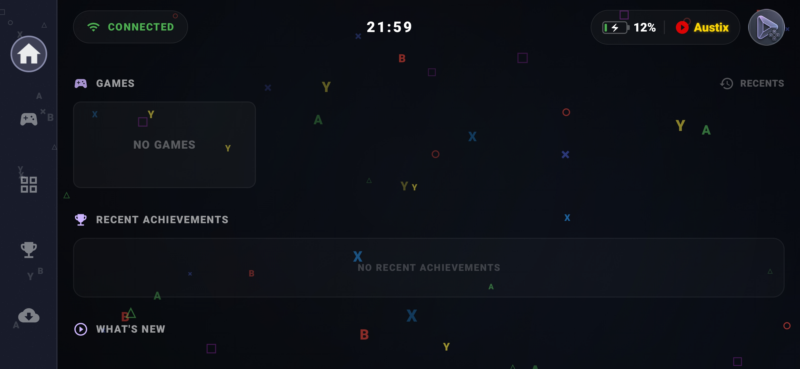

COS Launcher reúne tus juegos de Android y emuladores en una biblioteca organizada. Disfruta de navegación con controles, logros de RetroAchievements y accesos rápidos durante tus partidas con COS HUB.

Organiza tu colección de juegos con recursos gráficos, logros y accesos rápidos en pantalla.
Recorre la interfaz con tus controles y disfruta de una navegación fluida e intuitiva.
Conecta con RetroAchievements para desbloquear logros y seguir tu progreso.
Abre una superposición flotante con herramientas y accesos rápidos mientras juegas.
Descarga recursos gráficos de forma automática o manual, e importa o exporta copias de seguridad.
Consulta cuánto tiempo has dedicado a cada juego.
Escucha música mientras juegas y ajusta su volumen de forma independiente.
Enlaces de descarga directos y oficiales de los emuladores.
Parchea tus juegos en vivo de forma nativa sin necesidad de aplicaciones externas.
Asigna clips de vídeo de inicio personalizados a cada consola para una entrada más cinematográfica a los juegos.
COS Launcher está diseñado para comunicarse con tus emuladores favoritos, mandos físicos y dispositivos Android sin configuraciones complicadas.
Lanza directamente tus títulos favoritos. Compatible con todos los emuladores actuales y juegos nativos de Android.
Navegación nativa Plug & Play. Compatible con todos los controles Bluetooth o USB-C.
Optimizado para consolas portátiles dedicadas (Ayn Odin, Retroid Pocket, Anbernic, Logitech G Cloud), smartphones y tablets con Android 9.0 o superior.
Descarga COS Launcher y sus complementos oficiales para abrir el overlay con tu mando y reescalar la pantalla del dispositivo para jugar en TV o monitores.
Instala y actualiza la app desde Google Play.
Abre el overlay con mando sin tocar la pantalla.
Reescala tu pantalla y juega en TV sin franjas negras.
COS Launcher es 100% funcional y libre de anuncios desde el primer segundo. Si deseas consolas ilimitadas, COS HUB Overlay completo y personalización avanzada de nombre de perfil, puedes desbloquearlo con un pago único.
Ideal para jugar tus emuladores principales sin costo alguno.
Desbloqueo directo en la app. Sin suscripciones.
Todo lo que necesitas saber sobre compatibilidad, instalación y funcionamiento de COS Launcher.
COS Launcher es compatible con Android 9.0 (Pie) en adelante. Está optimizado para funcionar con máxima fluidez tanto en consolas portátiles dedicadas (Ayn Odin, Retroid Pocket, Anbernic, Logitech G Cloud) como en smartphones, tablets y dispositivos Android TV.
El soporte es 100% nativo. Puedes conectar tu control por Bluetooth o USB-C y navegar por toda la interfaz, biblioteca y herramientas de COS HUB utilizando la cruceta, sticks y botones sin requerir aplicaciones externas de mapeo.
No. COS Launcher es un organizador de biblioteca e interfaz visual de alto rendimiento (frontend). Debes poseer tus propios emuladores y juegos (ROMs) legalmente adquiridos; la aplicación se encarga de organizarlos, descargar sus carátulas y brindarte lanzamientos directos e instantáneos.
Sí, totalmente. COS Launcher está construido bajo el principio de privacidad por diseño: es una aplicación sin anuncios invasivos ni recolección de datos personales, verificada y protegida directamente por Google Play Protect.
Solo debes vincular tu cuenta de RetroAchievements desde la app. COS Launcher sincronizará automáticamente tus logros obtenidos, mostrará tu progreso en tiempo real dentro de tu perfil y desplegará un menú superpuesto (Overlay) durante tus partidas para consultar y seguir tus logros al instante.
El scraping de recursos se realiza mediante conexión con ScreenScraper y SteamGridDB utilizando tus cuentas y claves API. Al configurarlas en la app, COS Launcher obtiene e integra iconos en alta definición, fondos de pantalla (banners), vistas previas en video e información de cada juego.
COS Launcher se descarga y se disfruta 100% gratis con juegos ilimitados, scraping y hasta 2 consolas sin publicidad. Si deseas agregar más de 2 consolas, ver logros y accesos rápidos en el overlay, además de personalizar nombres con animaciones, colores e iconos, puedes desbloquear la edición completa por un único pago de $1.50 USD dentro de la app (sin suscripciones).
Creemos que encender tu dispositivo y ponerte a jugar debería ser algo inmediato, sin interfaces saturadas, configuraciones complejas ni distracciones innecesarias. COS Launcher transforma cualquier dispositivo Android en un entorno de consola limpio y directo, donde tu colección de juegos y logros se sienten integrados de forma natural con tus controles. Un desarrollo independiente pensado para ofrecer ligereza y comodidad real desde la primera partida.
Desarrollar COS Launcher y pulir cada detalle requiere muchas horas de código, pruebas y optimización; si la app te resulta útil en tus partidas y quieres mostrar tu agradecimiento, invitarme a un café en Ko-fi es una gran forma de valorar mi tiempo y darme un empujón de energía para seguir mejorándola.